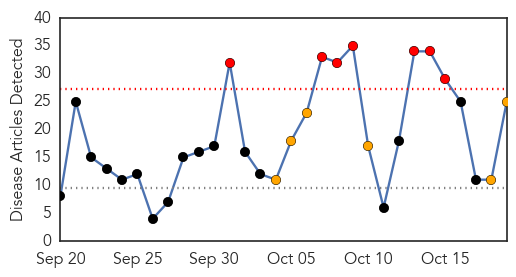
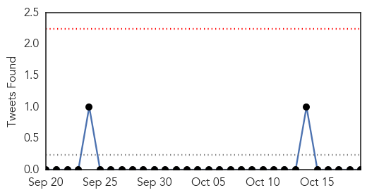
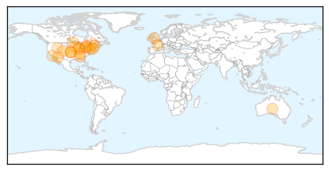
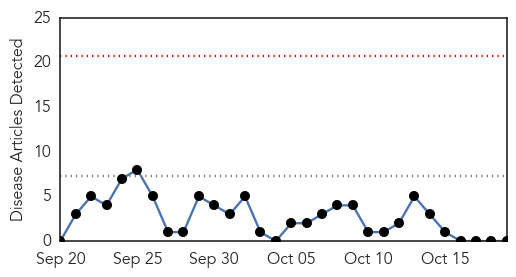

Influenza
30-Day Web Trend
7 alerts, 6 warnings

30-Day Twitter Trend
0 alerts, 0 warnings

Article Locations
Article Confidences
Top Articles:
- 0.999
- Officials: Flu vaccine should be more effective this year
- 0.999
- Protect yourself and your family from the flu
- 0.998
- It's Time for Your Flu Shot
- 0.997
- Fighting the Flu
- 0.996
- Six things to know about the flu in Pima County
- 0.992
- ADHS Report Shows Increase In Vaccine Preventable Diseases
- 0.991
- Alabama Health Officials: Get flu shot as soon as possible
- 0.988
- It's flu season: Get your shots, wash your hands
- 0.973
- Flu shots begin Tuesday in Alberta
- 0.958
- Governor visits, gets shot in the arm to fight influenza
- 0.914
- Flu shot campaign begins in Alberta
- 0.904
- Vaccinating children may be cost-effective for tackling flu
- 0.892
- Flu Season Is Here; First Case Documented in Midcoast Maine
- 0.885
- Today's stories from newspapers in North Bay Nipissing
- 0.863
- Calls for more flu shots for children following worst spread in 5 years
- 0.862
- Today's stories from newspapers in Parry Sound
- 0.862
- Iowa firm will make bird flu vaccine
- 0.843
- Today's stories from newspapers in Parry Sound
- 0.840
- The real reason germs spread in the winter
- 0.806
- Today's stories from newspapers in Caledon
- 0.806
- Today's stories from newspapers in Caledon
- 0.787
- Today's stories from newspapers in Orangeville
- 0.751
- October 19, 2015 Archives
- 0.751
- October 19, 2015 Archives
- 0.751
- October 19, 2015 Archives
Top Tweets:
-
No tweets found for Oct 19, 2015
West Nile Virus
30-Day Web Trend
0 alerts, 0 warnings

30-Day Twitter Trend
0 alerts, 0 warnings

Article Locations

Article Confidences

Top Articles:
-
No articles found for Oct 19, 2015
Top Tweets:
-
No tweets found for Oct 19, 2015